The problem of simple robot navigation involves N simple circular robots on a 2D m by n grid, an initial state specifying the initial position of the robots and a goal state specifying the final position of the robots.
Using various searching algorithms, the path from the initial to goal state will be found, without any robot exiting the grid, colliding or swapping places. Furthermore, the optimality, completeness, time complexity and space complexity of each algorithm will be compared.
In order to use a computer to solve a problem, we have to formulate the problem in a way that a computer can understand, which often involves mathematics. If you are bored by this, simply skip it and proceed to the animations, in which you can observe what I explain here.
The grid is represented by an m by n matrix in which each element is the x-y coordinate location of each cell in the grid.
Each robot is given a unique integer identifier j. The cell in which the jth robot is located is called a substate. The state of N robots is a list of each substate indexed by j in ascending order. Each robot j has a set of 9 available actions: { up, down, right, left, up-right, up-left, down-right, down-left, idle }. The robot chooses 1 of these actions to reach 1 of 9 unique substates. N robots provide N unique sets of 9 actions having 9N unique combinations, assuming their movement is unrestricted. This provides 9N reachable states. The reachable states of N robots is called the successor set.
Robot diameters are a parameter used to calculate collisions and are allowed to be any length. The speed of the robots v must be identical moving horizontally and vertically and √2v when moving diagonally. There is a vague concept of velocity in the program. However, transitions from one state to another occur instantaneously. Therefore, all robots must arrive at their subsequent substates at the same time, but that time is arbitrary.
The following restrictions on the successor set apply: (1) robots move by one grid unit if horizontally or vertically and two grid units if diagonally, (2) robots cannot exit the grid, (3) robots cannot collide.
Restrictions (1) and (2) are straight forward and are summarized below.
For restriction (3), simple kinematics can be used to determine whether an action leads to a collision. The derivation of how this is done is summarized below. The time taken to transition between substates is set to 1 second, for convenience. If one is not familiar with kinematics, it would be hard to learn from reading this alone. To avoid confusion, just enjoy the proceeding animations and observe that the robots indeed do not collide.
The problem is defined below in Python given an initial state, a goal state, the radius of the robots r, m and n. The diameter of the robots will be set to 90% the length of a grid cell for all examples on this page.
1 2 3 4 5 6 7 8 9 10 11 12 13 14 15 16 17 18 19 20 21 22 23 24 25 26 27 28 29 30 31 32 33 34 35 36 37 38 39 40 41 42 43 44 45 46 47 48 49 50 51 52 53 54 55 56 57 58 59 60 61 62 63 64 65 66 67 68 69 70 71 72 73 74 75 76 77 78 79 80 81 82 83 84 85 86 87 88 89 90 91 92 93 94 95 96 97 98 99 100 101 102 103 104 105 106 107 108 109 110 111 112 113 114 115 116 117 118 119 | class Problem : ''' +------------------------------------------------------------+ | N Robots on an m x n Grid | +------------+-----------------------------------------------+ | Substate j | Position of Robot j: ( xj, yj ) | +------------+-----------------------------------------------+ | State N | [ Substate 1, Substate 2, ..., Substate N ] | +------------+-----------------------------------------------+ | Actions ji | { Substate jf1, Substate jf2, ... } | +------------+-----------------------------------------------+ | Successor | { State Nf1, State Nf2, ... } | +------------+-----------------------------------------------+ | Conditions | (1) Robots move by one grid unit if | | | vertically or horizontally and by two | | | grid units if diagonally: | | | (a) xi - 1 <= xf <= xi + 1 | | | (b) yi - 1 <= yf <= yi + 1 | | | (2) Robots cannot exit the grid: | | | (a) 1 <= xj <= m | | | (b) 1 <= yj <= n | | | (3) Robots cannot collide: | | | (a) See function "collision" | +------------+-----------------------------------------------+ ''' def __init__( self, init, goal, r, m, n ) : self.r = r self.m = m self.n = n self.init = init self.goal = goal self.robots = len( init ) def collision( self, rj, sub_ji, sub_jf, rk, sub_ki, sub_kf ) : ''' Calculates the time at which a collision occurs, if a collision occurs. You can imagine the velocity calculations for vji, vjy, vkx and vky to be divided by 1 second. Therefore, if a collision occurs, it must occur within 1 second. This is an arbitrary time given to the robots to move from the initial to final substates, even though it is instantaneous. ''' xji, xjf = sub_ji[ 0 ], sub_jf[ 0 ] yji, yjf = sub_ji[ 1 ], sub_jf[ 1 ] xki, xkf = sub_ki[ 0 ], sub_kf[ 0 ] yki, ykf = sub_ki[ 1 ], sub_kf[ 1 ] vjx, vjy = xjf - xji, yjf - yji vkx, vky = xkf - xki, ykf - yki a = ( vjx - vkx )**2 + ( vjy - vky )**2 b = 2*( vjx - vkx )*( xji - xki ) + 2*( vjy - vky )*( yji - yki ) c = xji**2 + xki**2 + yji**2 + yki**2 - 2*xji*xki -2*yji*yki - ( rj + rk )**2 root = b**2 - 4*a*c if a == 0 or root < 0 : return False t1 = ( -b + root**0.5 ) / ( 2*a ) t2 = ( -b - root**0.5 ) / ( 2*a ) if 0 <= t1 <= 1 or 0 <= t2 <= 1 : return True return False def successor( self, state ) : ''' Generate set of reachable states from current state ''' acts = [] # Substates reachable to each # robot j, indexed by robot # Generating actions for each robot j for sub in state : acts_j = set() # (1) Robots move by one grid unit for act in [ 0, 1 , -1 ] : xi, yi = sub[ 0 ], sub[ 1 ] xf, yf = sub[ 0 ] + act, sub[ 1 ] + act xd, yd = sub[ 0 ] + act, sub[ 1 ] - act # (2) Robot cannot move outside grid if 1 <= xf <= self.m : # Horizontal movement acts_j.add( ( xf, yi ) ) if 1 <= yf <= self.n : # Vertical movement acts_j.add( ( xi, yf ) ) if ( 1 <= xf <= self.m and 1 <= yf <= self.n ) : # Upper left and lower right # diagonal movement acts_j.add( ( xf, yf ) ) if ( 1 <= xd <= self.m and 1 <= yd <= self.n ) : # Upper right and lower left # diagonal movement acts_j.add( ( xd, yd ) ) acts.append( acts_j ) succ = [] ini_state = state # name change def combine( acts, N = 0, new_state = [] ) : ''' Generates N nested for loops to combine all possible actions. It must be a recursive function. ''' if N == self.robots : # (3) Robots cannot collide for j in range( N ) : sub_ji = ini_state[ j ] sub_jf = new_state[ j ] for sub_ki, sub_kf in zip( ini_state[ j + 1 : ], new_state[ j + 1 : ] ) : if self.collision( self.r, sub_ji, sub_jf, self.r, sub_ki, sub_kf ) : return # Break all loops return succ.append( tuple( new_state ) ) for sub_jf in acts[ N ] : if sub_jf not in new_state : combine( acts, N + 1, new_state + [ sub_jf ] ) combine( acts ) # recursion return set( succ ) def goal_test( self, state ) : ''' True if the state is a goal. ''' self.state = state self.parent = None return state == self.goal |
To solve the problem using a search tree, the node and tree data structure should be defined. Tree structures are composed of nodes. A single node has a single parent node and one or more child nodes, for which it is the parent node. The branches extending from parent to child nodes create what looks like an upside down tree in which the root node is at the top. The root node is the only node that has no parent and represents the grandparent of all nodes in the tree. The degree of a node is the number of children of the node. The depth of the node is the number of parent nodes above it. Sibling nodes are nodes that share the same parent. Leaf nodes are the bottommost nodes, which have no children. The path of a node is its lineage to the root node.
For this problem, each node represents a state. The child nodes represent the states reachable from the parent node. The branch connecting the parent node to the child node represents the action taken. The initial state is the root node, and the goal state is a leaf node. The solution is the path from the root node to the leaf node representing the goal state.
This script defines a node which is used to create the tree. The paremeter number is the number of the node, which is used to uniquely identify it. This is necessary when graphing the tree, because the state itself cannot be used to uniquely identify the node. The parameter sibling is the number of the node in relation to its siblings. This is used to determine the horizontal position of the node in the tree when graphing. The function lineage is also used for graphing. It is used to contrict the spread of lower branches so they do not overlap on the graph. The path cost will be explained later.
1 2 3 4 5 6 7 8 9 10 11 12 13 14 15 16 17 18 19 20 21 22 23 24 25 26 27 28 29 30 31 32 33 34 35 36 37 38 39 40 41 42 43 44 45 46 47 | class Node : def __init__( self, state, parent = None, children = 0, pathcost = 0, sibling = 0, number = 0 ) : ''' Create a search tree node ''' self.state = state self.parent = parent self.children = children self.pathcost = pathcost self.sibling = sibling self.number = number def reverse( self, l ) : return l[ ::-1 ] def lineage( self, child ) : ''' Generates the product of the count of all parent nodes and their children, used to constrict the spread of the lower branches of the tree when graphing ''' n = 1 while child.parent : parent = child.parent n *= parent.children child = parent return n def path( self, child ) : ''' Returns dictionary storing chosen states and the identifiers for the chosen nodes ''' path = { 'path' : [ child.state ], 'number' : [ child.number ] } while child.parent : parent = child.parent path[ 'path' ].append( parent.state ) path[ 'number' ].append( parent.number ) child = parent path[ 'path' ] = self.reverse( path[ 'path' ] ) path[ 'number' ] = self.reverse( path[ 'number' ] ) return path |
Graphing and animating the search process is used to visualize how the algorithms work. This class generates a png of the search tree and the current path of the robot on the grid, given a node. The tree and path are regenerated with each node processed. The png files are turned into png animations outside of Python.
1 2 3 4 5 6 7 8 9 10 11 12 13 14 15 16 17 18 19 20 21 22 23 24 25 26 27 28 29 30 31 32 33 34 35 36 37 38 39 40 41 42 43 44 45 46 47 48 49 50 51 52 53 54 55 56 57 58 59 60 61 62 63 64 65 66 67 68 69 70 71 72 73 74 75 76 77 78 79 80 81 82 83 84 85 86 87 88 89 90 91 92 93 94 95 96 97 98 99 100 101 102 103 104 105 106 107 108 109 110 111 112 113 114 115 116 117 118 119 120 121 122 123 124 125 126 127 128 129 130 131 132 133 134 135 136 137 138 139 140 141 142 143 144 145 146 147 148 149 150 151 152 153 | import matplotlib.pyplot as plt import matplotlib.patheffects as pe class Graph : def __init__( self ) : self.graph = [] self.coord = {} self.treei = 0 self.gridi = 0 def grid( self, node, m, n, actions = [], rsize = 40 ) : ''' Graphs the path on a grid ''' # Getting path to state path = node.path( node )[ 'path' ] coords = [ [] for rj in range( len( path[ 0 ] ) ) ] for state in path : j = 0 for rj_loc in state : xj, yj = rj_loc[ 0 ], n + 1 - rj_loc[ 1 ] coords[ j ].append( ( xj, yj ) ) j += 1 plt.clf() # Clear current figure # Robot colors color = [ '#FF00FF', '#FF8000', '#DD0000', '#FF69B4', '#5E5EFF', '#454545' ] # Plotting the path to state j = 0 for rj in coords : path = list( zip( *rj ) ) plt.plot( *path, marker = 'o', color = color[ j % 6 ], alpha = 0.5, linewidth = 10, markersize = rsize ) j += 1 effect = [ pe.Stroke( linewidth = 5, foreground = 'white' ), pe.Normal() ] # Plotting available actions for node_f in actions : j = 0 for rc_loc in node_f.state : parent = node.state[ j ] xp, yp = parent[ 0 ], n + 1 - parent[ 1 ] xc, yc = rc_loc[ 0 ], n + 1 - rc_loc[ 1 ] plt.plot( [ xp, xc ], [ yp, yc ], marker = 'o', color = '#02FF02', alpha = 0.5, linewidth = 10, markersize = rsize ) j += 1 # Plotting each robot's location j = 0 for rj in node.state : xj, yj = rj[ 0 ], n + 1 - rj[ 1 ] plt.plot( xj, yj, marker = 'o', color = color[ j % 6 ], markersize = rsize, path_effects = effect ) j += 1 self.gridi += 1 plt.grid( b = True, color = 'white', linewidth = 5 ) ax = plt.gca() ax.set_xticks( [ i for i in range( 1, m + 1 ) ], minor = True ) ax.set_xticklabels( [ str( i ) for i in range( 1, m + 1 ) ], minor = True ) ax.set_yticks( [ i for i in range( 1, n + 1 ) ], minor = True) ax.set_yticklabels( [ str( i ) for i in range( n, 0, -1 ) ], minor = True ) ax.set_xticks( [ i + 0.5 for i in range( m + 1 ) ], minor = False ) ax.set_yticks( [ i + 0.5 for i in range( n + 1 ) ], minor = False ) ax.tick_params( color = 'none', labelcolor = '#02FF02', labelsize = 20, labeltop = True, labelbottom = False, which = 'minor' ) ax.tick_params( colors = 'none', which = 'major' ) ax.set_facecolor( 'none' ) ax.set_aspect( 1 ) plt.savefig( 'grid{}.png'.format( self.gridi ), dpi = 'figure', orientation = 'landscape', transparent = True ) def tree( self, node, expanded = [] ) : ''' Graphs the tree ''' if node.parent : # Retrieving parent coordinate xp, yp = self.coord[ node.parent.number ] # Generating child coordinates lineage = node.lineage( node ) siblings = node.parent.children yc = yp - 1 xc = node.sibling + 0.5 - siblings / 2 \ if siblings % 2 == 0 else node.sibling - siblings // 2 xc = xp + xc / lineage else : xc, yc = 0, 0 xp, yp = 0, 0 self.coord[ node.number ] = ( xc, yc ) # Retrieving path coordinates path = node.path( node ) lbls = [ str( list( state ) ) for state in path[ 'path' ] ] path = [ self.coord[ num ] for num in path[ 'number' ] ] pack = list( zip( *path ) ) # Plotting the tree effect = [ pe.Stroke( linewidth = 5, foreground = 'white' ), pe.Normal() ] # Generating branches for child in expanded : # Retrieving parent coordinate xp, yp = self.coord[ child.parent.number ] yci = yp - 1 # Generating child coordinates lineage = child.lineage( child ) siblings = child.parent.children xci = child.sibling + 0.5 - siblings / 2 \ if siblings % 2 == 0 else child.sibling - siblings // 2 xci = xp + xci / lineage branch = [ ( xp, yp ), ( xci, yci ) ] branch = list( zip( *branch ) ) self.graph.extend( branch ) plt.clf() # Clear current figure plt.plot( *self.graph, color = '#02FF02', marker = 'o', linewidth = 2, markersize = 10, path_effects = effect ) # Highlighting path plt.plot( *pack, color = '#FF00FF', marker = 'o', linewidth = 2, markersize = 10, path_effects = effect ) # Generating text for i in range( len( path ) ): xl, yl = path[ i ] plt.text( xl, yl + 0.5, lbls[ i ], color = 'white', fontsize = 15, bbox = dict( alpha = 0.9, facecolor = '#454545', edgecolor = 'none', boxstyle = 'round' ), verticalalignment = 'center', horizontalalignment = 'center' ) self.treei += 1 plt.axis( 'off' ) plt.grid( b = None ) plt.savefig( 'tree{}.png'.format( self.treei ), dpi = 'figure', orientation = 'landscape', transparent = True ) |
This algorithm explores all of the nodes at the present depth prior to moving on to the next depth. In other words, breadth-first search explores paths of length 1 first, then all those of length 2, and so on. Therefore, if a solution exists, breadth-first search will find the shallowest goal state first, making it complete and optimal. However, beadth-first search has an exponential time and space complexity bound, which means it is only practical for simple problems.
The algorithm is written using the classes above. A list containing explored nodes is used to prevent the aglorithm from exploring previously visited states. The frontier contains all of the nodes to be expanded as a first-in-first-out (FIFO) queue.
1 2 3 4 5 6 7 8 9 10 11 12 13 14 15 16 17 18 19 20 21 22 23 24 25 26 27 28 29 30 | def breadth_first_search( init, goal, r, m, n ) : init, goal = tuple( init ), tuple( goal ) graph = Graph() problem = Problem( init, goal, r, m, n ) node_id = 0 # node identifier for graph sibling = 0 # sibling identifier for graph frontier = [ Node( init ) ] explored = [] while True : if frontier == [] : return 'Failure' node = frontier.pop( 0 ) # FIFO queue graph.tree( node ) graph.grid( node, m, n ) if problem.goal_test( node.state ) : return node.path( node )[ 'path' ] explored.append( node.state ) children = [] for state in problem.successor( node.state ) : child = Node( state, parent = node ) if child.state not in explored : node_id += 1 node.children += 1 child.number = node_id child.sibling = sibling children.append( child ) frontier.append( child ) sibling += 1 sibling = 0 graph.tree( node, children ) graph.grid( node, m, n, children ) |
With only 1 robot on a 4 by 4 grid with an initial state [ ( 1, 1 ) ] and a goal state [ ( 4, 4 ) ], breadth-first search finds the path below. This site uses animated png files to illustrate how the algorithms work. If you are using a browser that does not support animated png files, please switch to one that does.
The search process and path is animated below. The violet portion of the search tree shows the current path. The current path is also animated on the grid to the right of the tree. Available actions are highlighted in green on the grid. The tree expands 30 nodes before finding a solution. This is the shortest path to the goal state and therefore is the optimal solution.
Some nodes produce less children because available actions are reduced by encountering the grid boundary and by preventing revisits to previously explored states.
With 2 robots on a 2 by 3 grid with an initial state [ ( 1, 1 ), ( 2, 1 ) ] and a goal state [ ( 2, 3 ), ( 1, 3 ) ], breadth-first search finds the path below.
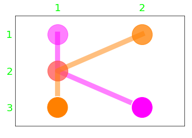
The search process and path is animated below. On the grid to the right of the tree, the path of robot 1 is highlighted in violet and the path of robot 2 is highlighted in orange. However, the solution is a single path containing both robots. The tree expands 79 nodes before finding an optimal solution. You can see how breadth-first search exhausts every possible path of a certain length before moving on to the next, until it reaches the goal state. Due to the exponential time and space complexity of breadth-fist search, more complicated examples cannot be explored.
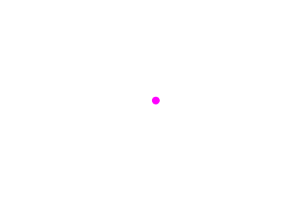
This alogirthm explores the deepest level of the tree first. When the search hits a leaf node, it backtracks up the tree and expands a shallower level node to the deepest level, and so on. Depth-first search has an exponential time complexity bound but may be faster than breadth-first search if the correct node is chosen at the start of the search, or if there are many solutions in the tree. Its space complexity is the product of the number of branches and depth of the tree. Depth-first search is not complete, because it may not find a solution if the node it chooses to expand leads to an infinite or very deep leaf node. It is also not optimal, because it does not garantee the shallowest goal state.
The script is identical to breadth-fist search except the frontier is a last-in-first-out (LIFO) queue.
1 2 3 4 5 6 7 8 9 10 11 12 13 14 15 16 17 18 19 20 21 22 23 24 25 26 27 28 29 30 | def depth_first_search( init, goal, r, m, n ) : init, goal = tuple( init ), tuple( goal ) graph = Graph() problem = Problem( init, goal, r, m, n ) node_id = 0 # node identifier for graph sibling = 0 # sibling identifier for graph frontier = [ Node( init ) ] explored = [] while True : if frontier == [] : return 'Failure' node = frontier.pop( -1 ) # LIFO queue graph.tree( node ) graph.grid( node, m, n ) if problem.goal_test( node.state ) : return node.path( node )[ 'path' ] explored.append( node.state ) children = [] for state in problem.successor( node.state ) : child = Node( state, parent = node ) if child.state not in explored : node_id += 1 node.children += 1 child.number = node_id child.sibling = sibling children.append( child ) frontier.append( child ) sibling += 1 sibling = 0 graph.tree( node, children ) graph.grid( node, m, n, children ) |
With only 1 robot on a 4 by 4 grid with an initial state [ ( 1, 1 ) ] and a goal state [ ( 4, 4 ) ], depth-first search finds the path below.
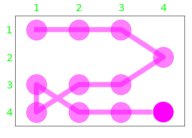
The search process and path is animated below. The search expands 10 nodes before finding a solution. Although depth-first search found a solution after expanded less nodes, the solution is far from optimal
With 2 robots on a 2 by 3 grid with an initial state [ ( 1, 1 ), ( 2, 1 ) ] and a goal state [ ( 2, 3 ), ( 1, 3 ) ], depth-first search finds the path.
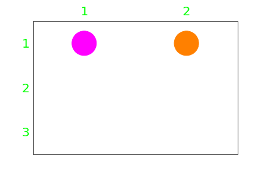
The search process and path is animated below. The search expands 34 nodes before finding a solution. You can see how depth-first search dives into the first node it encounters until a solution or dead end is found. This leads to an aimless path in which the robots seem to randomly stumble onto the goal state. In the example, depth-first search actually encounters a dead end and backtracks up the tree before settling on the solution.
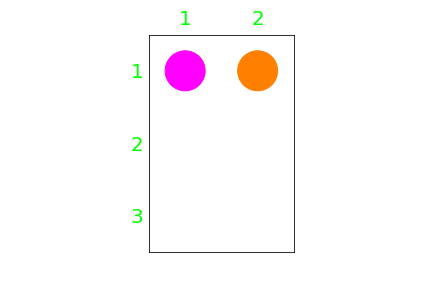
This algorithm chooses nodes based on their heuristic value in ascending order. The goal state should have a heuristic value of zero. This algorithm finds solutions quickly, but does not always find the optimal solution. Like depth-first search, the algorithm tends to follow a single path all the way to the goal and backtracks up the tree and expands shallower nodes when it hits a dead end. Additionally, like depth-first search, greedy search is not complete or optimal for the same reasons. Greedy search has, in the worst case, an exponential space complexity bound and an exponential time complexity bound, but with a good heuristic function, the time complexity can be significantly reduced.
The script is identical to breadth-first and depth-fist search except the frontier is not a FIFO or LIFO queue but a priority queue in which nodes are prioritized by their heuristic values in ascending order. Heuristic values are determined by a function that calculates the straight line distance from a given state to the goal state.
1 2 3 4 5 6 7 8 9 10 11 12 13 14 15 16 17 18 19 20 21 22 23 24 25 26 27 28 29 30 31 32 33 34 35 36 37 38 39 40 41 42 43 44 45 46 47 48 49 50 51 52 53 54 55 56 57 58 | def greedy_search( init, goal, r, m, n ) : def magnitude( v ) : ''' Magnitude of vector v ''' return ( v[ 0 ]**2 + v[ 1 ]**2 )**0.5 def difference( sub_f, sub_i ) : ''' Vector difference between substate f and i ''' return sub_f[ 0 ] - sub_i[ 0 ], sub_f[ 1 ] - sub_i[ 1 ] def distance( sub_i, sub_f ) : ''' Straight line distance from substate i to f ''' return magnitude( difference( sub_f, sub_i ) ) def heuristic( state, goal ) : ''' Sum of estimated distance each robot j has to travel from substate j to the goal substate j ''' return sum( distance( state[ j ], goal[ j ] ) for j in range( problem.robots ) ) init, goal = tuple( init ), tuple( goal ) graph = Graph() problem = Problem( init, goal, r, m, n ) node_id = 0 # node identifier for graph sibling = 0 # sibling identifier for graph frontier = { heuristic( init, goal ) : [ Node( init ) ] } explored = [] while True : if frontier == [] : return 'Failure' # Priority queue slct = min( frontier.keys() ) node = frontier[ slct ].pop() if frontier[ slct ] == [] : del frontier[ slct ] graph.tree( node ) graph.grid( node, m, n ) if problem.goal_test( node.state ) : return node.path( node )[ 'path' ] explored.append( node.state ) children = [] for state in problem.successor( node.state ) : child = Node( state, parent = node ) if child.state not in explored : node_id += 1 node.children += 1 child.number = node_id child.sibling = sibling children.append( child ) h = heuristic( child.state, goal ) if h in frontier.keys() : frontier[ h ].append( child ) else : frontier[ h ] = [ child ] sibling += 1 sibling = 0 graph.tree( node, children ) graph.grid( node, m, n, children ) |
With only 1 robot on a 4 by 4 grid with an initial state [ ( 1, 1 ) ] and a goal state [ ( 4, 4 ) ], greedy search finds the path below.
The search process and path is animated below. The algorithm finds the optimal solution after expanding only 3 nodes.
With 2 robots on a 2 by 3 grid with an initial state [ ( 1, 1 ), ( 2, 1 ) ] and a goal state [ ( 2, 3 ), ( 1, 3 ) ], greedy search finds the path below.
The search process and path is animated below. Greedy search finds a solution after expanding only 5 nodes, but it is suboptimal. The two robots rush toward their goal substates, but have to turn around to avoid a collision. The optimal solution involves one of the robots remaining idle for the first move (see breadth-first search), which greedy search will never find (it's too greedy!). Though greedy search often significantly reduces the time taken to find a solution, the solution is often suboptimal.
Due to the speed of this algorithm, more complex examples can be explored. With 2 robots on a 7 by 7 grid with an initial state [ ( 2, 2 ), ( 6, 6 ) ] and a goal state [ ( 6, 6 ), ( 2, 2 ) ], greedy search finds the path below.
The search process and path is animated below. Greedy search finds a solution after expanding 6 nodes. The depth of this solution is also 6. The shallowest goal state exists at a depth of 5, in which the two robots anticipate the collision in the center of the grid and get out of each others way at the same time. Greedy search will never find this solution. If only these two robots could work together instead of being greedy. Will they ever learn?
By separating the 2 robots and increasing the dimensions of the grid so that the number of actions available to each robot is not restricted, as we have done in this example, the problem becomes impossible to solve using breadth-first or depth-first search. The reason is the following: The root node expands into 80 child nodes, or 92 minus the state in which both robots are idle. Each of these 80 nodes can be expanded into roughly 80 more child nodes, which gives about 802 total. The number of nodes increases approximately exponentially with depth, like 80d, where d is the depth. The shallowest goal state is found at a depth of 5, which means breadth-first search would have to explore (at worst) roughly 805, or 3 billion nodes, before finding a solution. Comparatively, depth-first search would meander aimlessly down a very deep and random path. The maximum depth of the tree is a path in which one of the robots traverses the full area of the grid each time the other robot moves to also traverse the full area of the grid, or ( n2 - 1 )2 + n2 - 1 = n4 - n2, for m = n, which gives a maximum depth of 2,352 for m = n = 7. That means the search tree in its entirety consists of about 802352 nodes. Try plugging that into a calculator. That's more than the number of atoms that exist in the observable universe, by more than just a lot! Imagine traversing a depth of 2352 in this massive tree. Who would have thought a simple program and a simple problem would produce such an astounding result.
This algorithm chooses nodes based on the sum of their heuristic value and path cost in ascending order. The path cost is the sum of all step costs in the current path. The step cost is the cost of moving from a parent state to a child state. For a typical path finding problem with one robot, the path cost is the actual distance the robot has traveled thus far along the path and the hueristic is the estimated remaining distance. This way, the search algorithm should find the optimal solution with a priority queue while "pruning" the search tree of paths that are predicted to be suboptimal. A* search is optimal and complete, as long as the heuristic function is admissable and consistent. An admissible heuristic function is one that never overestimates the cost to reach the goal. If the heuristic value of a parent node is not greater than the step cost plus the heuristic value of its child node, the heuristic function is consistent. Like greedy search, A* search has an exponential space complexity bound and an exponential time complexity bound, but with a good heuristic function, the time complexity can be significantly reduced.
The script is identical to greedy search except the priority queue is prioritized by the heuristic value plus the path cost of the nodes in ascending order. The heuristic function is the same as in greedy search but termed the h score. The path cost function is termed the g score. The sum of the heuristic value and the path cost is termed the f score.
The problem here is not a typical path finding problem. The description above fails with multiple robots. The reason is that the path cost plus the heuristic value does not consider solutions having idle states as suboptimal. The optimal solution here is the quickest solution, not necessarily the solution in which the robots travel the least distance. Careful consideration went into designing the path cost function so that an optimal solution will be found while the admissibility and consistency of the heuristic function is preserved.
The path cost function gives actions directed toward the goal state a lower step cost. For robot j moving from a parent to a child substate, the step cost is the striaght line distance from the parent substate to the child substate plus the magnitude of the difference of two vectors. The vector termed the hueristic vector is directed from the goal substate to the child substate with a magnitude equal to the heuristic value of the child substate. The vector termed the step cost vector is directed from the child substate to the parent substate with a magnitude also equal to the heuristic value of the child substate. If the child substate is idle, or equal to the parent substate, the step cost vector is given a value opposite of the hueristic vector. The total step cost for the state is the sum of the step costs of all substates. In this way, all N robots are directed toward their goal substates, the hueristic function is admissible and consistent and an optimal solution will be found.
1 2 3 4 5 6 7 8 9 10 11 12 13 14 15 16 17 18 19 20 21 22 23 24 25 26 27 28 29 30 31 32 33 34 35 36 37 38 39 40 41 42 43 44 45 46 47 48 49 50 51 52 53 54 55 56 57 58 59 60 61 62 63 64 65 66 67 68 69 70 71 72 73 74 75 76 77 78 79 80 81 82 83 84 85 86 87 88 89 90 91 92 93 94 95 96 97 98 99 100 101 102 103 104 | def astar_search( init, goal, r, m, n ) : ''' Modified A* search ''' def magnitude( v ) : ''' Magnitude of vector v ''' return ( v[ 0 ]**2 + v[ 1 ]**2 )**0.5 def addition( sub_j, sub_k ) : ''' Vector addition between substate j and k ''' return sub_j[ 0 ] + sub_k[ 0 ], sub_k[ 1 ] + sub_k[ 1 ] def difference( sub_f, sub_i ) : ''' Vector difference between substate f and i ''' return sub_f[ 0 ] - sub_i[ 0 ], sub_f[ 1 ] - sub_i[ 1 ] def distance( sub_i, sub_f ) : ''' Straight line distance from substate i to f ''' return magnitude( difference( sub_f, sub_i ) ) def h_score( state, goal ) : ''' Sum of estimated distance each robot j has to travel from substate j to the goal substate j ''' return sum( distance( state[ j ], goal[ j ] ) for j in range( problem.robots ) ) def set_mag( m, v ) : ''' Change the mangitude of vector v to the value m ''' mag_v = magnitude( v ) if mag_v : nx, ny = v[ 0 ] / mag_v, v[ 1 ] / mag_v return m*nx, m*ny else : return v def g_score( child, goal ) : ''' The g score is the path cost function, which is the sum of all step costs along the current path. The step cost for a child node is the sum of the striaght line distance from each parent substate to their child substate plus the magnitude of the difference of two vectors that serve to increase the cost of steps that are idle or directed away from the goal. ''' stepcost = 0 distance = 0 for j in range( problem.robots ) : # position vector relative to goal substate (hueristic vector) h_vector = difference( child.state[ j ], goal[ j ] ) # vector pointing from child to parent substate (step cost vector) s_vector = difference( child.parent.state[ j ], child.state[ j ] ) distance += magnitude( s_vector ) if magnitude( s_vector ) == 0 : s_vector = -h_vector[ 0 ], -h_vector[ 1 ] else : s_vector = set_mag( magnitude( h_vector ), s_vector ) stepcost += magnitude( difference( h_vector, s_vector ) ) return child.parent.pathcost + stepcost + distance def f_score( child, goal ) : ''' Total of g_score plus h_score ''' return child.pathcost + h_score( child.state, goal ) init, goal = tuple( init ), tuple( goal ) graph = Graph() problem = Problem( init, goal, r, m, n ) node_id = 0 # node identifier for graph sibling = 0 # sibling identifier for graph frontier = { h_score( init, goal ) : [ Node( init ) ] } explored = [] i = 0 while True : if frontier == [] : return 'Failure' # Priority queue f_pa = min( frontier.keys() ) node = frontier[ f_pa ].pop() if frontier[ f_pa ] == [] : del frontier[ f_pa ] graph.tree( node ) graph.grid( node, m, n ) if problem.goal_test( node.state ) : return node.path( node )[ 'path' ] explored.append( node.state ) children = [] for state in problem.successor( node.state ) : child = Node( state, parent = node ) child.pathcost = g_score( child, goal ) if child.state not in explored : node_id += 1 node.children += 1 child.number = node_id child.sibling = sibling children.append( child ) f = f_score( child, goal ) if f in frontier.keys() : frontier[ f ].append( child ) else : frontier[ f ] = [ child ] sibling += 1 sibling = 0 graph.tree( node, children ) graph.grid( node, m, n, children ) |
With only 1 robot on a 4 by 4 grid with an initial state [ ( 1, 1 ) ] and a goal state [ ( 4, 4 ) ], the modified A* search finds the path below.
The search process and path is animated below. The algorithm finds the optimal solution after expanding only 3 nodes. The search is identical to greedy search with one robot.
With 2 robots on a 2 by 3 grid with an initial state [ ( 1, 1 ), ( 2, 1 ) ] and a goal state [ ( 2, 3 ), ( 1, 3 ) ], the modified A* search finds the path below.
The search process and path is animated below. The modified A* search finds a solution after expanding 6 nodes, and it is optimal. This is a significant improvement from the 79 nodes breadth-first search took to find an optimal solution. This search process is unique. Like greedy search, the robots initially rush toward the goal state, but unlike greedy search, once they realize something is obstructing their way, they backtrack up the tree and try a new path. They are greedy in that they want to reach the goal state as quickly as possible but not so greedy that they can't take a step back from their initial impulse to head straight to the goal and reconsider the best coarse of action.
With 2 robots on a 7 by 7 grid with an initial state [ ( 2, 2 ), ( 6, 6 ) ] and a goal state [ ( 6, 6 ), ( 2, 2 ) ], the modified A* search finds the path below.
The search process and path is animated below. The modified A* search finds a solution after expanding 55 nodes. This is significantly more than the 6 greedy search took to find a solution, but in a world of around 802352 option, browsing through just 55 to find an optimal one seems rather efficient. Initially, the robots rush to the goal again and almost make the same mistake as their greedy counterparts, but instead of pushing eachother aside, they try to work together. It appears as though they begin to have some kind of nonverbal debate once they encounter. It's as though they are attempting to reach a consensus on the best coarse of action. They are working together for the benefit of the whole. Our robots have matured and become productive citizens of their simple but surprisingly intricate 2D world.
Unfortunately, problems involving many robots spaced far apart are still infeasible. The time and space complexity of the modified A* search will explode during a many robot encounter. Even if a suboptimal solution is adequate, due to the size of the successor set 9N, the time and space complexity will explode for large N, no matter how quick the search algorithm is. This problem was invented as a learning tool to demonstrate how these algorithms work, which are fundamental to AI and computer science. The problem itself is not actually solvable for arbitrary N, m and n values. Methods to further reduce the time and space complexity of the search processes and other algorithms or methods used to solve this problem more efficiently are beyond the scope of this page.